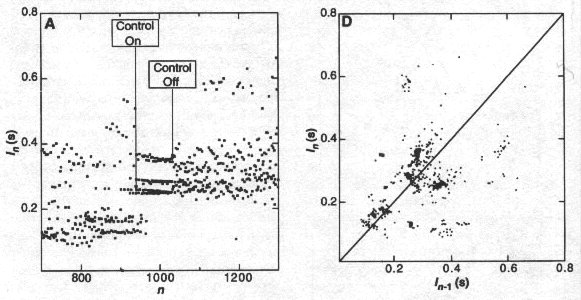

| Another application is to controlling cardiac chaos.
Garfinkel, Spano, Ditto, and Weiss performed
experiments on on rabbit hearts in chemical-induced arrhythmias. The OGY method succeeded
in controlling chaos in 8 of the 11 experiments. |
| The time series was the interval between successive heartbeats. |
| The return map is on the right, the time series on the left. |
|  |
| In this example, control both |
| produced a persistent low-order cycle, and |
| removed the shortest interbeat intervals, that is, reduced the
tachycardia. |
|